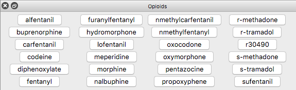

The buttonpanel command allows creating a simple custom interface of buttons to execute specific commands without having to enter them into the command line. This is convenient whenever the desired commands are known ahead of time and typing them in would be incovenient, such as in virtual reality, and/or too time-consuming, such as during a demonstration. Panels created with buttonpanel are saved in sessions. See also: alias, functionkey, vr, Basic Actions, ChimeraX browser
If the number of rows N and columns M in the panel is not given, all of the buttons will be placed in a single row.
Each use of add creates an additional button with text button-name that executes button-command when clicked. Each button-command may be a composite of other commands, i.e., multiple commands separated by semicolons, and should be enclosed in quotation marks if it includes any spaces. The commands may include specifiers like sel, selAtoms, or selMaps to act on the current selection.
If the button's row i and column j are not specified, buttons are placed in the order in which they are created to first fill either the rows (default) or the columns.
The title of the custom panel is shown on its top bar, and can be specified with the vr command gui option as the interface to show in the headset when the VR hand-controller menu button is pressed.
Pausing the cursor over a button in the panel shows the associated command in a pop-up balloon.
Example:
buttonpanel Opioids rows 6 columns 4 fill columns
buttonpanel Opioids add alfentanil command "hide models; show #1.1 model"
buttonpanel Opioids add buprenorphine command "hide models; show #1.2 model"
(etc.)
